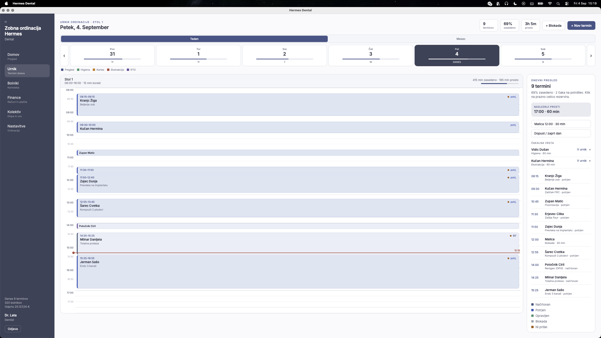

Workflows that fit the work.
Bring tasks, records, and decisions into a coherent workspace. Less copying between spreadsheets. A clearer view of what needs to happen next.
From scattered information to shared contextThe reason we exist
An eight-to-ten-hour working day fills up quickly. Then come the records to update, the appointments to check, and the things nobody has had time to finish. Extra work becomes extra weight.
Apollo is here to lighten that load. We want routine work to take less effort, important details to be easier to find, and the end of the day to feel like the end of the day.
We begin with independent dental practices in Slovenia. Hermes Dental is our first focused product; future work starts with a specific operational problem and a clear fit with the team.
Bring tasks, records, and decisions into a coherent workspace. Less copying between spreadsheets. A clearer view of what needs to happen next.
From scattered information to shared contextWe set up open-source AI assistants on private computers, with access to the work information you choose. Phone access lets you ask a work question by message, even when you are away.
Your computer. Access agreed with you.An assistant with the context of the task: help find information, prepare a next step, flag something missing, and bring the right details back into view.
Useful context, closer to the decisionHermes is currently focused on single-chair practices using macOS. We start with a fit conversation and recommend it when its current capabilities match your workflow. Custom software and AI projects are scoped separately and accepted when we can deliver them to our standard.
Find a free appointment. See what still needs doing. Check tomorrow from your phone. Choose an example below to see how an assistant could help.
An assistant could help you find a free appointment, check unfinished tasks, or look up tomorrow’s schedule from your phone. Enable JavaScript to see the illustrative conversations and estimate time spent on routine work.
Progress, with good judgement
We use open-source agents and choose capable AI models with lower running costs. You pay for a practical setup and ongoing service, with a monthly plan sized around your needs. Pricing is available on request.
Before a workflow goes live, we define what success looks like, who reviews its output, and when it hands the decision back to a person. Actions with higher consequences require human approval.
Local software is a starting point. Access, backups, and any external model connection need explicit choices. Running an app locally does not automatically make every connected service private.
THE APOLLO APPROACH
We put the work into the setup: the right AI, connected tools, and less wasted processing. So everyday assistance makes sense for smaller teams, too.
The same example, as it repeats
Relative to this example →
lower model usage cost
in this equal-token exampleUSD · DeepSeek peak rates vs Claude standard rates · 18 Sep 2026
Tokens are the pieces of text a model reads and writes. This chart compares published API prices for the same token counts, with uncached input. It is not a comparison of equal task performance or Apollo plan prices. Actual costs depend on token usage, retries, tools, setup, and support.
The software checks availability. The AI explains the options. Comparable results depend on using the tools correctly and testing the actual task.
A private agent installation can use an external AI provider. We agree the connections and data access with you.
What we keep seeing
Around the world, people who do skilled work are still spending the evening on the extra shift: slots, records, invoices, follow-ups. We wrote these down in our own words. They are observations, not testimonials.
The appointments already fill the day. Then come the gaps to fill, the records to finish, the invoices, and the follow-ups that wait until the waiting room is empty. Teams do not need another dashboard. They need the next step to take less of the day.
When the official program is built for billing and reporting, people keep a second list for what actually matters tomorrow. That shadow work is unpaid, easy to lose, and hard to hand over. A good workspace should hold the plan you work from, not only the record you file.
Local and lower-cost AI already exist. What smaller clinics lack is someone to connect the records, choose a capable model, and agree what the assistant may do. We package that: software, an agent on a private computer, and rules you can see.
For independent dental practices · macOS
Dental practice management software for the daily flow of a single-chair clinic: appointments, patient records, treatment plans, invoices, and payments.
Monthly plans · scope and pricing on request ↗
04 / Why Apollo
We’re building Apollo because progress should be something people feel in their everyday lives. More room to think. Fewer things falling through the cracks. Better tools within reach of the people who need them.
Spreadsheets have their place. But when a team becomes the glue between disconnected files, reminders, and applications, the system is asking too much of the people inside it.
Our ambition is to make capable software and useful AI a practical part of ordinary work. We start with specific problems, build carefully, and judge the result by what it gives people back.
More capacity to contribute. More energy for life.
A little more clarity
Hermes is currently focused on independent, single-chair dental practices using macOS. We review the practice’s workflow and requirements before recommending a setup. Multi-chair practices, Windows environments, and workflows that depend on automatic government-portal submissions are outside the current product scope.
Explore Hermes Dental ↗We look at the workflow, the people responsible for it, the setup required, and the support involved. For Hermes Dental, we recommend a plan only when the current product fits the practice. For custom work, we agree on a defined problem and scope before proposing a project.
How Hermes plans are scoped ↗That depends on the model and connected services. A local app can still use a remote AI provider. Our approach is to make those choices explicit: what runs locally, what is shared, and who has access.
The goals, permissions, and decisions that need judgement. We design around visible actions and review appropriate to their consequences. AI should make it easier to notice and decide, with a person able to check its work.
The aim is fewer steps in the tools you already use, with everyday questions you can type in your own words. We handle the setup and agree what the assistant can access and do. Your team still checks decisions that need human judgement.
Part of the difference comes from how the model runs. DeepSeek describes V4.1 Flash as using only selected parts of its network for each piece of text, and storing conversation information more compactly. That reduces the computing and memory needed to serve requests.
DeepSeek’s architecture explanation ↗Providers can also charge less when previously processed input can be reused, or when demand is lower. These methods are not exclusive to Chinese models. Each provider sets its own prices; architecture alone does not explain the entire price gap.
DeepSeek usage pricing ↗Open-source agent software and openly available model weights give us more setup options. Running them still costs money: equipment, electricity or hosting, integration, and support all matter.
For a clearly defined task, it can. When a tool supplies the available appointments or calculates a total, the model has a narrower job: understand the request, choose the right tool, and explain the result. Good setup makes that easier.
That does not make every model equally capable. Difficult reasoning, ambiguous requests, and long sequences of actions can still separate them. The useful comparison is accuracy, speed, and total cost per successfully completed task, including retries and human review. Comparable results need to be demonstrated on the workflow you actually use.
How agent results are evaluated ↗The work ahead
Hermes Dental is built for a specific kind of practice, and our wider projects begin with a specific operational need. We take on work when the people, workflow, and scope give us a clear path to a result we can stand behind.
Review fit and plan options ↗Hermes is currently focused on independent, single-chair practices using macOS. Review current product scope before enquiring.